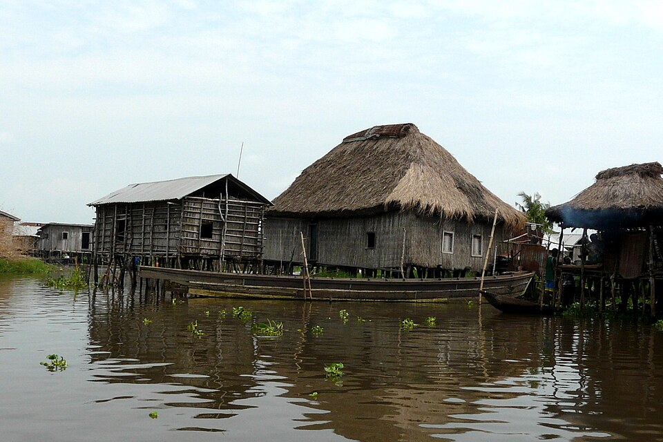
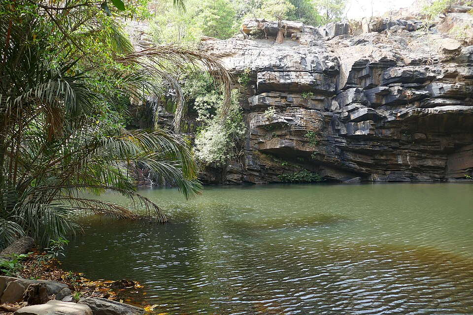

Photo Gallery: Benin
Hover over a picture with the mouse, or use the Tab key to move from one picture to the next.
Hover over an image below to display here.





Hover over a picture with the mouse, or use the Tab key to move from one picture to the next.

